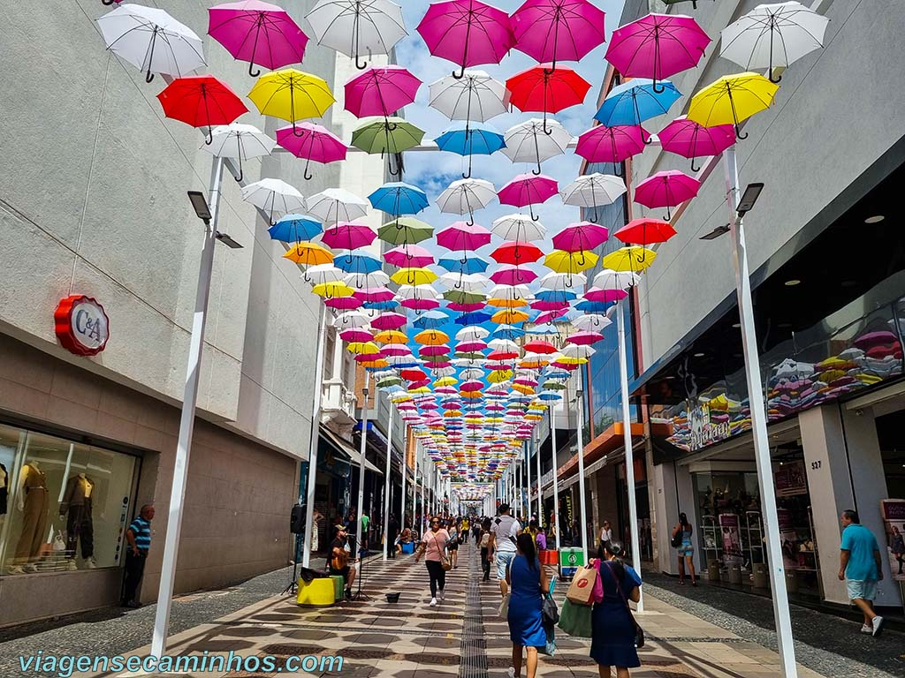
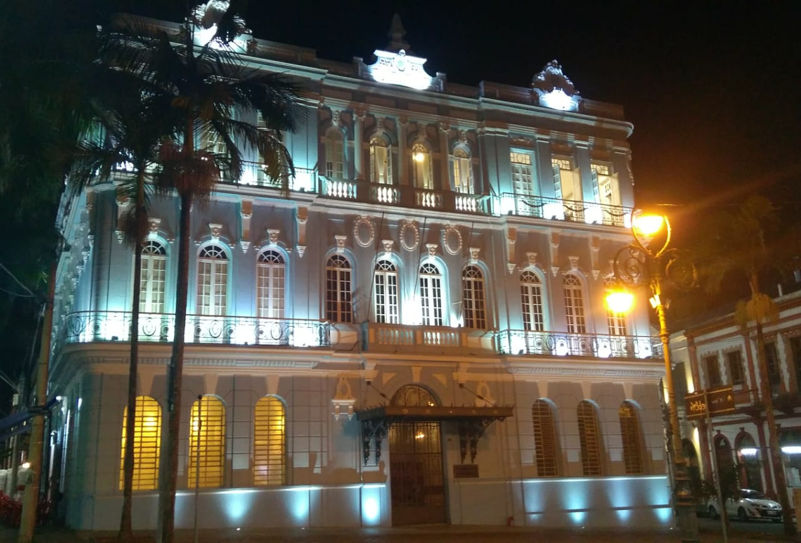

Polo Tecnológico e de Inovação: Campinas abriga o renomado Parque Tecnológico, que concentra empresas de tecnologia, centros de pesquisa e incubadoras de startups. Esse ambiente propício à inovação contribui para o desenvolvimento de novas tecnologias e impulsiona o crescimento econômico da região.
Educação de Qualidade: A cidade é reconhecida por sua excelência em educação, com instituições de ensino de renome nacional, como a Universidade Estadual de Campinas (UNICAMP) e a Pontifícia Universidade Católica de Campinas (PUC-Campinas). Essas instituições atraem estudantes de todo o país e contribuem para a formação de profissionais qualificados.
Indústria e Comércio Diversificados: Campinas possui uma economia diversificada, com destaque para os setores industrial e comercial. A cidade abriga empresas dos mais diversos segmentos, desde tecnologia e manufatura até agricultura e comércio, o que gera empregos e movimenta a economia local.
Qualidade de Vida: Com uma infraestrutura urbana bem desenvolvida, serviços públicos eficientes e baixos índices de violência, Campinas oferece uma excelente qualidade de vida para seus habitantes. A cidade conta com parques, áreas verdes e opções de lazer que proporcionam bem-estar e equilíbrio para seus moradores.
Cultura e Arte: Campinas possui uma efervescente cena cultural, com teatros, cinemas, museus e galerias de arte que promovem diversas manifestações culturais. O Teatro Municipal José de Castro Mendes, o Museu de Arte Contemporânea de Campinas (MACC) e o Centro Cultural de Campinas são importantes espaços de difusão cultural na cidade.
Gastronomia Variada: A gastronomia em Campinas é uma verdadeira celebração da diversidade, com uma grande variedade de restaurantes que oferecem desde pratos da culinária brasileira até cozinha internacional. A cidade também é conhecida por suas feiras gastronômicas e festivais de comida, que atraem visitantes de toda a região.
Belezas Naturais: Apesar de ser uma cidade urbanizada, Campinas possui áreas de preservação ambiental e belezas naturais que encantam seus habitantes. O Parque Ecológico Monsenhor Emílio José Salim e o Parque Portugal (Lagoa do Taquaral) são exemplos de locais onde é possível desfrutar da natureza e praticar atividades ao ar livre.
História e Patrimônio Cultural: Campinas possui um rico patrimônio histórico e arquitetônico, com construções centenárias e espaços culturais que contam a história da cidade. O Centro de Convivência Cultural, a Estação Cultura e o Museu Carlos Gomes são importantes pontos turísticos que preservam a memória local.
Saúde e Bem-Estar: A cidade oferece uma ampla rede de saúde pública e privada, com hospitais, clínicas e centros de saúde que garantem atendimento de qualidade para seus moradores. Além disso, Campinas é conhecida por suas opções de atividades físicas e bem-estar, como academias, spas e centros de yoga.
Eventos e Festivais: Campinas possui uma agenda cultural movimentada, com eventos, festivais e shows que acontecem ao longo do ano. O Festival de Cinema de Campinas, o Festival Gastronômico de Campinas e a Virada Cultural são exemplos de eventos que atraem turistas e fomentam a economia local.
